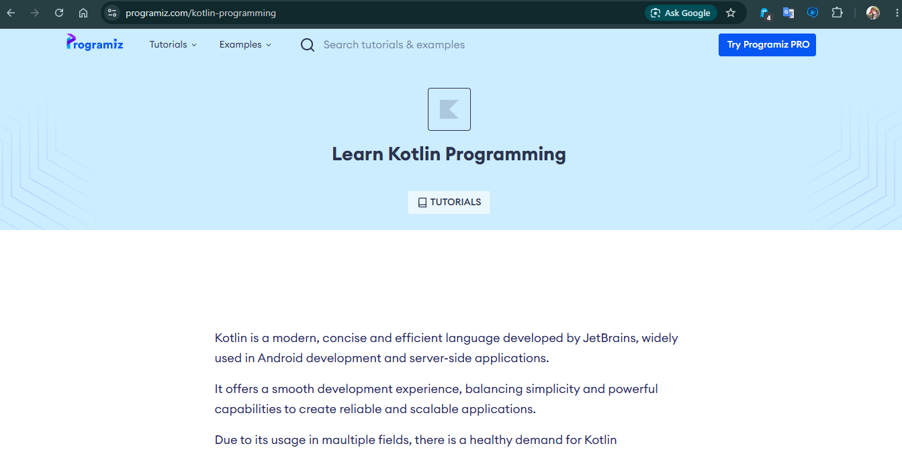
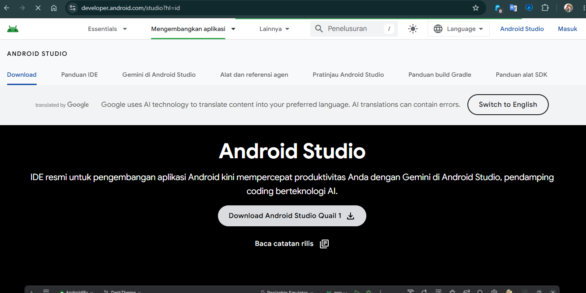
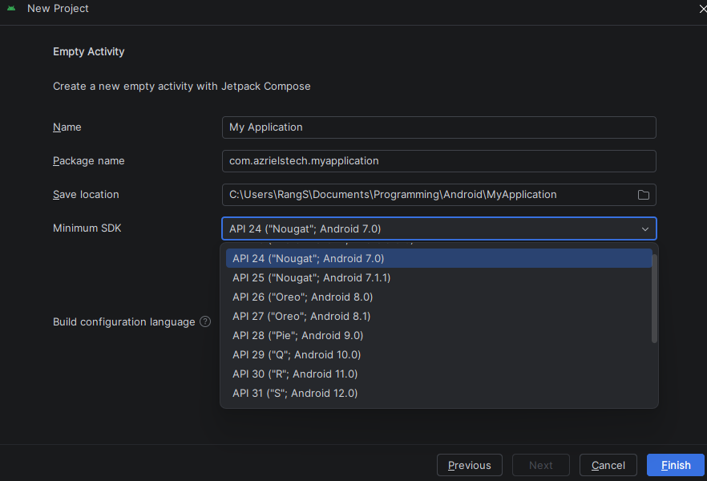
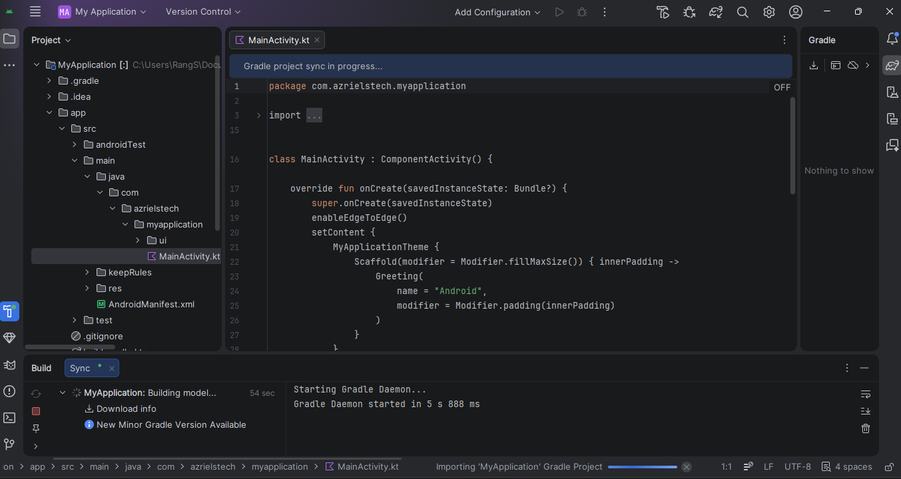
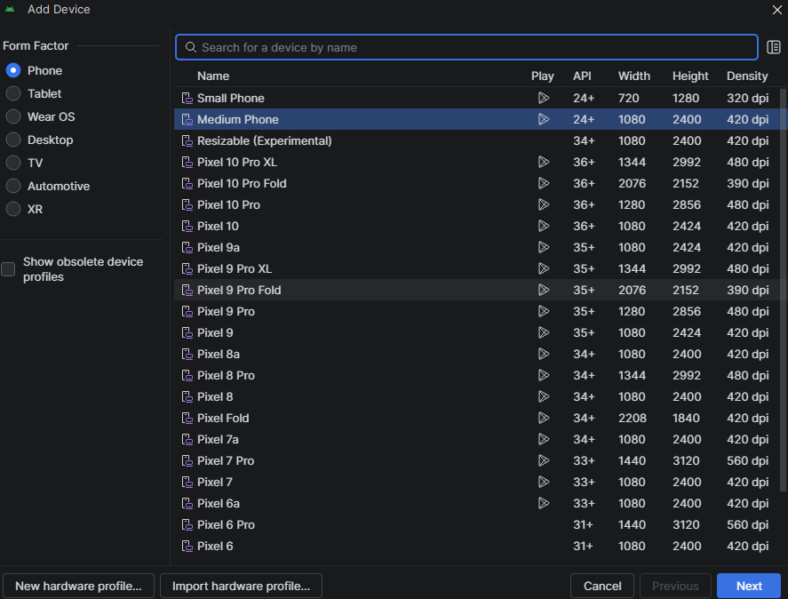
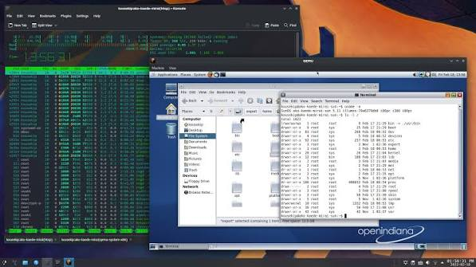

Apa itu Android?
Tentunya kita perlu tahu dulu android itu apa. Android adalah sistem operasi dengan pengguna terbanyak di dunia, terutama karena handphone yang menjadi faktor besar dalam peningkatan ekosistem android. Tak hanya melalui handphone, android juga terdapat dalam TV.
"I am very happy about Android obviously. I use Android, and it's actually made cellphones very usable."
— Linus Torvalds, pencipta Linux
Dalam artikel ini, kita tidak akan membahas tentang android melainkan pengalaman yang kudapat setelah belajar development di ekosistem Android.
Kotlin

Jujur saja dari dulu aku tidak tertarik untuk belajar android development. Namun karena ingin menambah wawasan, Aku pun belajar bahasa pemrogramannya yaitu Kotlin. Kotlin adalah bahasa pemrograman yang dikembangkan oleh JetBrains dan terkenal dalam kemampuannya dalam menggantikan Java. Java juga bahasa pemrograman ya!
Pada hari pertama aku belajar Kotlin di website bernama Programiz. Aku belajar basicnya mulai dari Data Types, If Statements, Loop, dan lain-lain. Semakin jauh aku semakin paham bahwa Kotlin ini merupakan bahasa pemrograman berbasis Object Oriented Programming. Bukan bahasa pemrograman biasa yang bisa menggunakan Functional Programming.
Setelah aku belajar Kotlin, aku juga belajar sedikit tentang bahasa pemrograman Java. Aku hanya mempelajari Java sampai pada tahap mengubah tipe data. Setelah itu, saatnya aku install Android Studio.
Baca juga: Programmer yang sebenarnya
Instalasi Android Studio

Android Studio adalah Environment untuk membuat aplikasi Android. Layaknya Visual Studio 2022 yang sering digunakan oleh developer game untuk Unity. Aku agak terkejut saat melihat ukuran file installernya yang mencapai sekitaran 1.2+ GB. Karena biasanya installer sengaja diperkecil agar instalasi lebih cepat. Tapi okelah, mungkin memang harus sebesar itu.
Setelah ku install Installer, aku jalankan file Installer dan next-next saja sampai selesai. Setelah selesai, aku buka Android Studio dan pada tampilan awalnya aku langsung klik New Project. Nanti akan ada pilihan untuk membuat aplikasi pada Device apa, ada Phone and Tablet, Wear OS (Aku tak tahu ini Device apaan), Television, Car, XR. Tentunya aku pilih Phone and Tablet dan klik yang Empty Activity. Setelahnya tinggal next.

Aku pun tulis Nama Aplikasinya. Untuk Package Name, aku tak mengerti untuk apa jadi asal isi saja. Lalu yang Minimum SDK, Aku pilih API 24 ("Nougat", Android 7.0) karena rekomendasi dari AI. Aku agak bingung kenapa nama Android harus pakai nama makanan?. Lalu pada Build Configuration Language aku pilih Kotlin DSL (build.gradle.kts) karena terdapat tulisan [Recommended]. Lagi pula saat aku klik bagian paling bawah itu, hanya muncul pilihan Groovy DSL (build.gradle) yang mana aku tak tahu sama sekali itu apa.
SDK Manager

IDE android studio ini agak berbeda dari IDE biasanya. Jika di VSCode menggunakan Ctrl+Shift+Up akan memblok baris, di android studio justru memindahkan baris tersebut ke atas, Bukan membloknya. Lalu setelah sedikit pemanasan dengan IDE baru, waktunya untuk install SDK.
SDK atau Software Development Kit adalah seperangkat alat lengkap yang disediakan untuk membantu developer, HARUSNYA! Aku tanya AI untuk versi mana yang harus ku install terutama bagi pemula sepertiku. AI merekomendasikan untuk install versi:
- Android 17.0 ("CinnamonBun") 37.0
- Android 16.0 ("Baklava") 36.1
- Android 7.1.1 ("Nougat") 24
Untuk install, cukup klik gerigi di kanan atas (samping foto profil), klik SDK Manager dan klik Android SDK, pilih SDK Platforms dan centang mana saja versi SDK yang perlu diinstall. Klik tombol oke dan tunggu hingga selesai.
Baca juga: Terminal: Sang Kawan Programmer!
Virtualisasi
Hanya dengan mendengar kata Virtualisasi, aku sudah mencium bau-bau Error. Jadi Android Studio ini memerlukan virtualisasi atau device android virtual untuk menjalankan aplikasi android. Di bagian kanan, terdapat Device Manager. Aku klik itu dan klik tombol +. Lalu aku install device mana yang kuinginkan.

Aku pilih Medium Phone karena ya... Medium, Pertengahan gitu. Aku Next-Next saja dan serius dah, ukuran filenya bisa sebesar itu. sekitaran 3 GB kalau tidak salah. Sejauh ini terdengar lancar-lancar saja ya? Waktunya kita masuk ke bagian paling menyebalkan dari Android Development.
Error Pertama
Saat aku klik tombol Run App (Shift+F10), masalah bertubi-tubi mulai muncul. Pertama adalah error berikut:
1. Dependency 'androidx.core:core:1.19.0' requires libraries and applications that
depend on it to compile against version 37 or later of the Android APIs.
:app is currently compiled against android-36.1.
Recommended action: Update this project to use a newer compileSdk of 37.
Note that updating a library or application's compileSdk (which allows newer APIs to be used) can be done separately from updating
targetSdk (which opts the app in to new runtime behavior) and minSdk (which determines which devices the app can be installed on).
2. Dependency 'androidx.core:core-ktx:1.19.0' requires libraries and applications that depend on it to compile against version 37 or later of the Android APIs.
:app is currently compiled against android-36.1.
Recommended action: Update this project to use a newer compileSdk of 37.
Note that updating a library or application's compileSdk
(which allows newer APIs to be used) can be done separately from updating targetSdk (which opts the app in to new runtime behavior) and minSdk (which determines which devices the app can be installed on).
Inti dari pesan tersebut adalah kesalahan dependency. Mungkin terdengar sepele, Tapi tahu berapa lama aku harus memperbaiki hal ini? Sekitar 5-7 Jam hanya untuk membereskan hal ini! Ingat ya, aku tidak tahu apa-apa soal android studio apalagi tentang Konfigurasi sistem sana-sini. Yang aku tahu hanyalah Kotlin sebagai bahasa pemrogramannya dan android studio sebagai alat untuk membuat aplikasi android, Hanya itu.
Untungnya sudah kuselesaikan dengan INSTALL ULANG DARI AWAL dan mengubah konfigurasi pada file build.gradle.kts menjadi seperti berikut:
app/src/build.gradle.kts
plugins {
alias(libs.plugins.android.application)
alias(libs.plugins.kotlin.compose)
}
android {
namespace = "com.azrielstech.androidtodo"
compileSdk {
version = release(36) {
minorApiLevel = 1
}
}
defaultConfig {
applicationId = "com.azrielstech.androidtodo"
minSdk = 24
targetSdk = 36
versionCode = 1
versionName = "1.0"
testInstrumentationRunner = "androidx.test.runner.AndroidJUnitRunner"
}
buildTypes {
release {
optimization {
enable = false
}
}
}
compileOptions {
sourceCompatibility = JavaVersion.VERSION_11
targetCompatibility = JavaVersion.VERSION_11
}
buildFeatures {
compose = true
}
}
dependencies {
implementation(platform(libs.androidx.compose.bom))
implementation(libs.androidx.activity.compose)
implementation(libs.androidx.compose.material3)
implementation(libs.androidx.compose.ui)
implementation(libs.androidx.compose.ui.graphics)
implementation(libs.androidx.compose.ui.tooling.preview)
implementation(libs.androidx.core.ktx)
implementation(libs.androidx.lifecycle.runtime.ktx)
testImplementation(libs.junit)
androidTestImplementation(platform(libs.androidx.compose.bom))
androidTestImplementation(libs.androidx.compose.ui.test.junit4)
androidTestImplementation(libs.androidx.espresso.core)
androidTestImplementation(libs.androidx.junit)
debugImplementation(libs.androidx.compose.ui.test.manifest)
debugImplementation(libs.androidx.compose.ui.tooling)
}
Error Kedua
Error kedua adalah Virtualisasi. Yes, seperti yang kukatakan sebelumnya bahwa aku sudah mencium bau-bau error. Setelah aku klik tombol Run App (Shift+F10), Device Manager terus menerus loading tak tahu kenapa. Aku restart beberapa kali Device Managernya. Dalam beberapa momen, aku tak bisa restart karena device sedang berjalan. Namun ditunjukkan PIDnya. Jika tak tahu PID, PID itu semacam kode proses yang sedang berjalan di windows.

Aku buka task manager dan hendak mematikannya, aku masukkan PIDnya pada pencarian dan aku menemukan masalahnya. Ternyata Android Studio ini menggunaan QEMU untuk menjalankan Virtual Android Device. Kenapa aku tahu ini masalahnya? karena QEMU itu adalah emulator yang berjalan lancar jika menggunakan KVM, dan KVM hanya ada di Linux.
Aku menggunakan Windows yang kalau tidak salah menggunakan Intel-Vtx. Yang dimana QEMU akan kewalahan untuk virtualisasi. Jadi ya, masalah ku atasi setelah AI menyarankanku untuk menggunakan HP android asli yang disambungkan ke laptop dengan USB. Lebih tepatnya melakukan USB Debugging, untungnya HP ku yang merek Realme sudah support Developer Mode, jadi aku bisa lanjut belajar.
Project Pertama: Nilai Siswa
Untuk project pertama, AI menyarankanku untuk membuat aplikasi penghitung nilai siswa sederhana. Yang dimana siswa memasukkan nilai harian, UTS dan UAS lalu diproses menghasilkan output grade/nilai tertentu.
Untuk membuat inputan, di android studio bisa menggunakan TextField. Lalu data dari TextField diproses menggunakan if statements. Namun aku belajar hal baru tentang TextField, seperti namanya "TextField" atau kolom teks yang artinya akan menghasilkan nilai/data berupa String, bukan integer. Jadi untuk ubah menjadi integer, harus menggunakan fungsi khusus yaitu toIntOrNull(). Tidak hanya itu, aku juga belajar tentang mutableStateOf() yang berfungsi untuk mengubah UI oleh JetPack Compose.
var nilaiAkhir by remember { mutableStateOf("")}
val nUTSInt = nilaiUTS.toIntOrNull() ?: 0
val nUASInt = nilaiUAS.toIntOrNull() ?: 0
val nilaiRataRata = (nHarianInt + nUTSInt + nUASInt) / 3
nilaiAkhir = if (nilaiRataRata in 90..100){
"A"
} else if (nilaiRataRata in 80..89) {
"B (Baik)"
} else if (nilaiRataRata in 70..79) {
"C (Cukup)"
} else if (nilaiRataRata in 60..69) {
"D (Kurang)"
} else {
"E (Tidak Lulus)"
}
Oh iya, aku hampir lupa tentang JetPack Compose. JetPack Compose itu semacam toolkit UI modern dari google untuk membuat antarmuka aplikasi secara native. Dan juga kode utama dari aplikasi android ini berada di
/app/src/main/java/com/azrielstech/nilaisiswa/MainActivity.ktJika ingin cek project ini, bisa lihat di Githubku: Link ke Repo/Source Code
Project Kedua: Android Calculator
Pada project kedua, aku membuat aplikasi Calculator sederhana untuk android. Sebenarnya project ini paling gampang dari sebelumnya, hanya saja aku punya masalah ketika hendak ubah tipe data. Mengingat dalam kalkulator, jika user memasukkan nilai yang tak bisa dibagi, Kalau tidak salah menghasilkan nilai 0. Misalnya 2 / 5 = 0. Anehkan? jadi dari pada menggunakan Integer, aku menggunakan Float.
Pada project ini juga aku belajar untuk membuat tombol reset yang dimana akan menghapus isi dari TextField atau inputan user menjadi kosong.
Jika ingin cek project ini, bisa lihat di Githubku: Link ke Repo/Source Code
Project Ketiga: Android To-Do List
Pada Project ketiga ini, aku membuat aplikasi To-Do List sederhana. Project ketiga ini mengajarkan cara membuat Array, mengisi data dan menghapus data pada Array. Berbeda dengan project sebelumnya, untuk menyimpan Array di sini menggunakan mutableStateListOf().
Tidak hanya itu, project ini juga mengajarkanku untuk mengubah data Array menjadi String
val tasklist = remember { mutableStateListOf()}Jika ingin cek project ini, bisa lihat di Githubku: Link ke Repo/Source Code
Kesimpulan
Bisa dibilang membuat aplikasi Android ini memang menyenangkan, hanya saja masalah seperti dependency benar-benar membingungkan terutama jika menggunakan IDE yang baru. Dan juga virtualisasi yang sering tidak berjalan mulus menjadi pembelajaran sendiri. Terakhir kali aku menggunakan QEMU (Saat artikel ini dibuat) adalah saat virtualisasi grub. You know lah, Tipikal pengguna Arch Linux, apa saja pengen di kustomisasi, bahkan Bootloader sekalipun.
Jika ingin mempelajari tentang Android Development, cobalah gunakan AI. Namun, bukan meminta AI untuk membuat kode yang benar secara langsung melainkan beritahu konsep dasar apa saja hal yang perlu dimengerti,
cukup tanyakan pada AI apa yang harus dibuat. Syntax apa yang harus digunakan atau apapun itu.
Selama membuat ketiga project tersebut, aku menggunakan AI tapi tidak minta untuk memberi kode yang benar melainkan untuk mengarahkan sampai project selesai.
Mintalah saran dan tunjukkan kode yang telah kau buat dan biarkan AI memberi saran. Bisa tonton video berikut untuk belajar Kotlin:
Link ke video